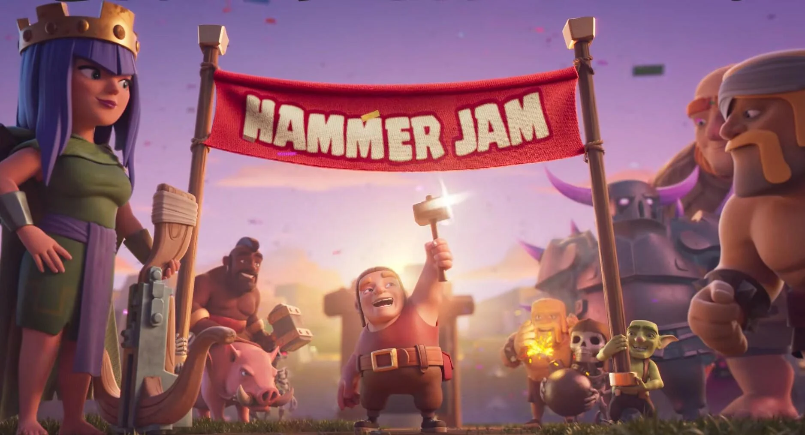

Hammer Jam
En ce moment Clash of Clan organise le Hammer Jam. C'est un évenement annuel durant lequel les coût et durée d'amélioration sont réduit de moitié. Ces réductions sont très pratiques pour les joueurs car elles leur permettent d'améliorer leur bases plus rapidement pour atteindre le niveau d'hôtel de ville suivant. Cette événement survient souvent quelque temps avant l'annonce d'un nouvel Hôtel de ville.
Clash of Clans World Championship
Les Clash of Clans World Championships sont la plus grande compétition e-sport officielle du jeu, organisée chaque année par Supercell. Ils réunissent les meilleures équipes mondiales issues de plusieurs tournois qualificatifs, où la stratégie, la précision et la coordination sont essentielles. Les équipes s’affrontent dans des guerres de clans intenses pour décrocher le titre de champion du monde.
L’édition 2025 s’est déroulée du 31 octobre au 2 novembre à la DreamHack Atlanta, rassemblant les huit meilleures équipes de la saison à savoir :
- Navi
- Carrie Esports
- XiBai
- DIZI x STMN
- Millesime MG
- Elevate
- Repotted Gaming
- Tribe Gaming
le vainceur de cette édition est l'équipe Tribe gaming